1. FDE의 의미와 역할
여기서 FDE는 Forward Deployed Engineer의 의미를 확장한 Field Driven Evolution입니다. 현장의 고유한 문제와 경험을 기반으로 조직의 실행체계를 계속 진화시키는 방식입니다.
FDE는 현장의 문제를 발견하고, AI와 시스템이 이해할 수 있는 구조로 바꾸며, 작동하는 해결책을 만든 뒤 검증된 해결책을 플랫폼 자산으로 전환합니다.
2. 자산화의 핵심 개념
플랫폼 자산화는 현장에서 만들어진 해결책을 다음 프로젝트에서 재사용할 수 있는 표준 부품으로 전환하는 과정입니다. 결과 보고서나 소스코드를 보관하는 것과 달리, 자산은 적용 조건과 데이터, 규칙, 권한, 승인, KPI, 수정 범위를 설명할 수 있어야 합니다.
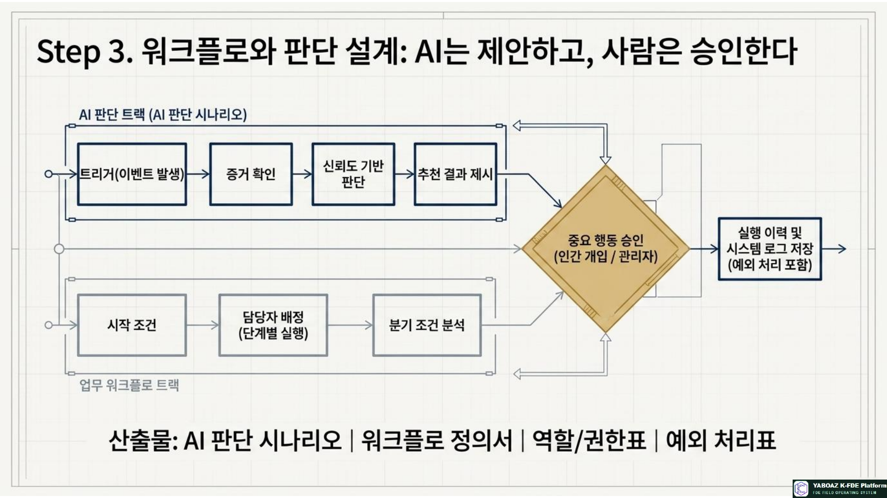
3. FDE와 SaaS 결합을 통한 6단계 자산화 프로세스
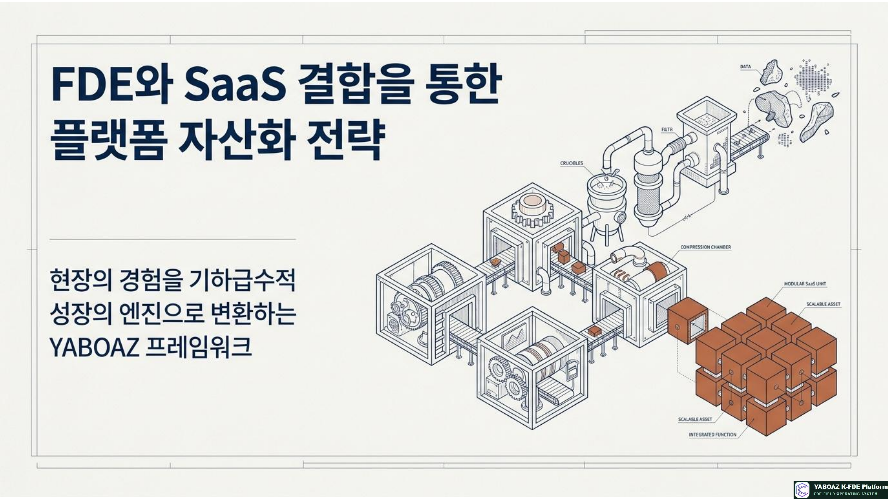
1단계. 현장 문제 관찰
FDE는 고객의 요구사항만 듣지 않고 실제 업무 행동과 흔적을 관찰합니다. 공식 매뉴얼과 실제 업무의 차이, 반복 지연, 수기·엑셀 우회, 책임 불명확, 예외 상황을 확인합니다.
- 현장 관찰·인터뷰·업무 로그
- 시스템 사용 기록과 문서·매뉴얼
- 오류·재작업 기록과 처리시간
- 현장 문제 목록·업무 흐름도·이해관계자 지도·증거 목록
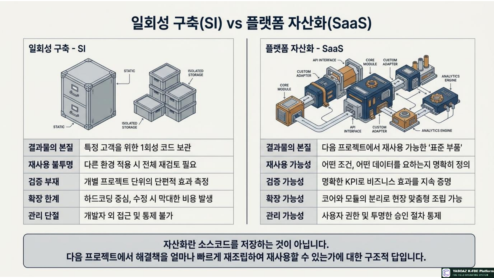
2단계. 온톨로지 구조화
흩어진 현장 지식을 AI와 시스템이 이해할 수 있는 실행지식으로 바꿉니다. YABOAZ는 객체·속성·관계·상태·이벤트·규칙·행동의 7요소를 사용합니다.
| 요소 | 제조 설비관리 예시 |
|---|---|
| 객체 | 설비, 부품, 작업자, 정비요청, 생산라인 |
| 속성 | 종류, 위치, 사용시간, 위험도 |
| 관계 | 설비가 라인에 연결됨, 작업자가 요청을 담당함 |
| 상태·이벤트 | 정상·경고·고장 / 이상 신호·부품 교체 |
| 규칙·행동 | 고위험 시 승인 필요 / 작업자 호출·알림 |
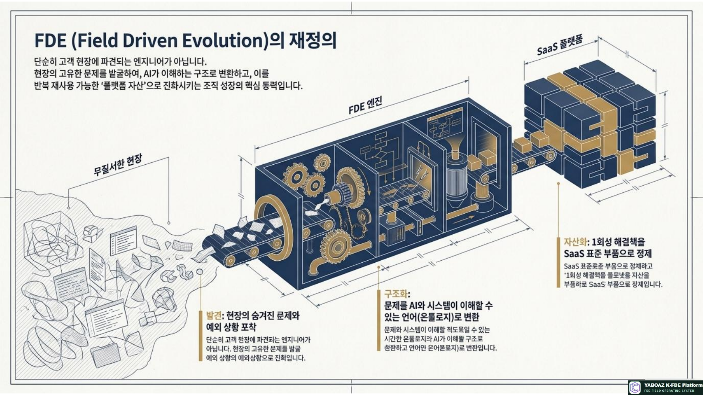
3단계. 워크플로와 판단 설계
온톨로지를 실제 업무 흐름과 연결합니다. AI가 확인할 증거와 판단 기준, 추천 결과, 신뢰도, 사람의 승인 조건, 예외 처리와 실행 이력을 정의합니다.
AI는 제안하고, 사람은 중요한 행동을 승인하며, 시스템은 실행 이력을 남깁니다.
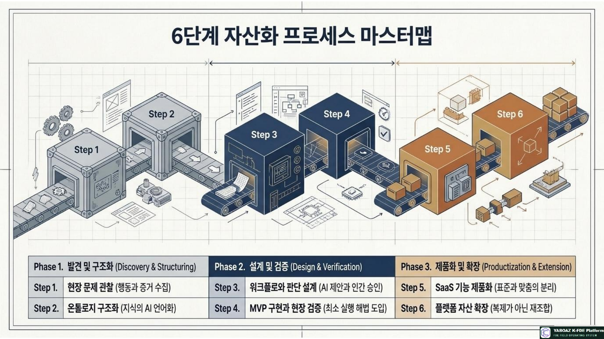
4단계. MVP 구현과 현장 검증
처음부터 완성형 시스템을 만들지 않고 한 현장·한 사용자군·한 업무·한 핵심 문제·한두 개 데이터·한 개 KPI로 최소 실행 해법을 만듭니다.
- YABOAZ 업무 화면·AI Agent·자동 알림 워크플로
- KPI 대시보드·승인센터·데이터 입력·조회 화면
- 사용성·업무시간·오류·추천 타당성·승인 흐름·예외 지속성 검증
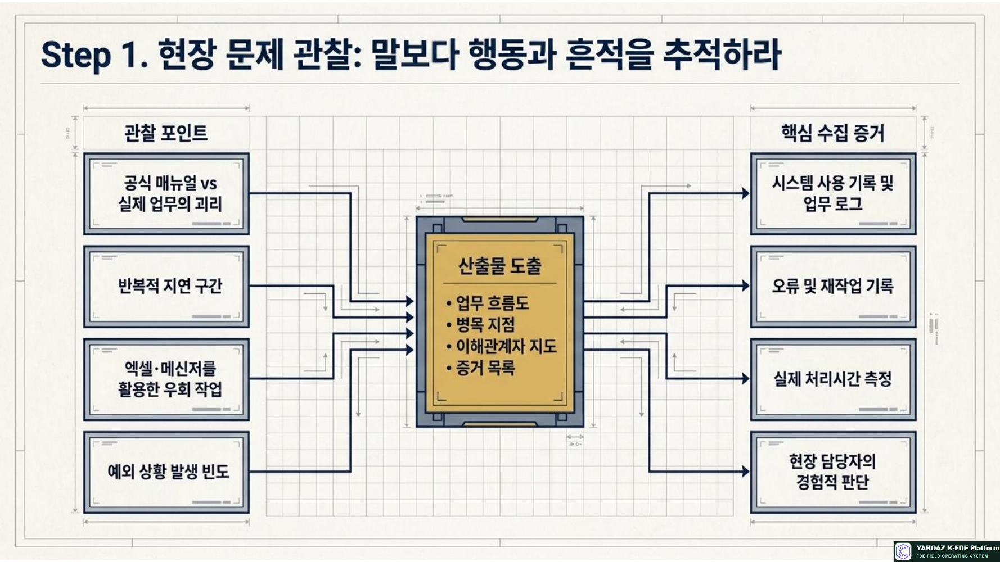
5단계. SaaS 기능 제품화
고객마다 달라지는 부분과 반복되는 공통 구조를 분리합니다. 고객 용어·조직·권한·규정·예외·KPI 목표는 설정값으로 관리하고, 질문·객체 모델·상태·판단 규칙·승인 워크플로·알림·KPI 계산·화면 구성은 표준 기능으로 제품화합니다.
변하지 않아야 할 핵심은 표준화하고, 고객마다 달라져야 할 부분은 설정값과 확장 모듈로 분리합니다.
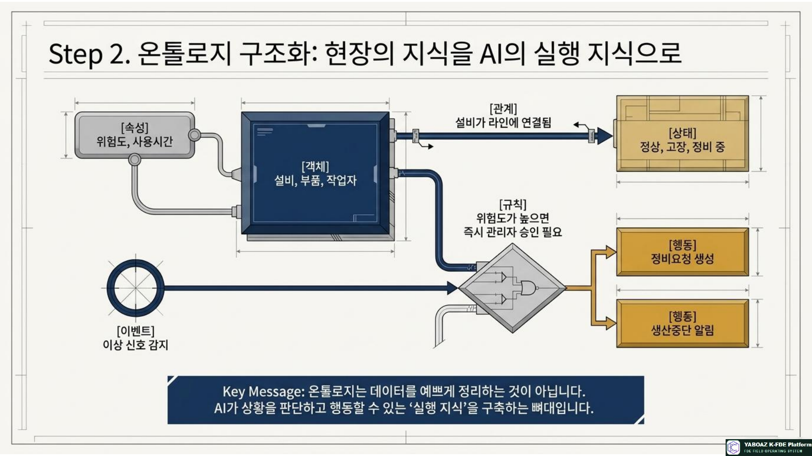
6단계. 플랫폼 자산 확장
제품화된 자산은 공통 구조와 현장별 변형 요소를 구분해 재조합합니다.
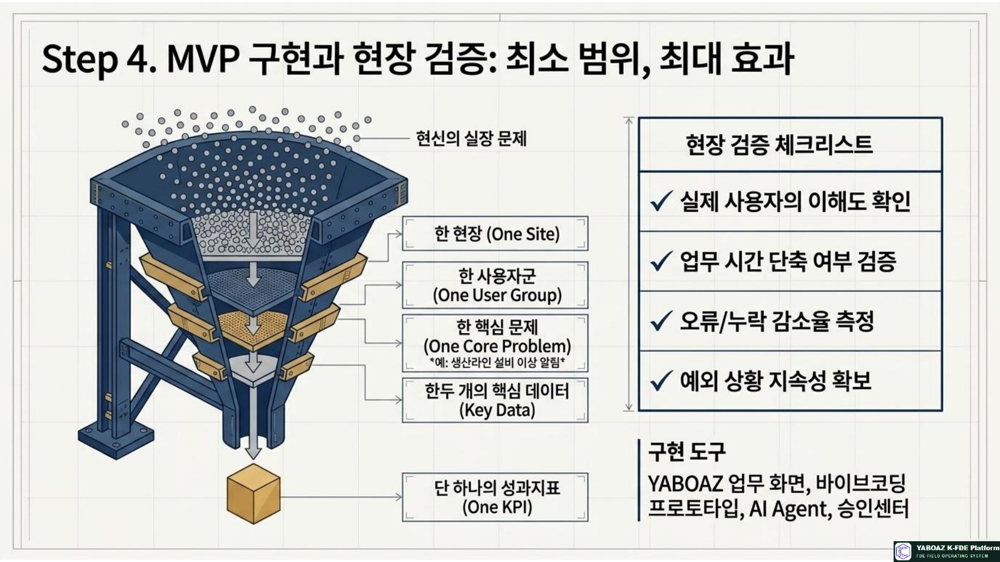
4. 해결책을 템플릿화하기
자산화의 핵심은 소스코드 저장이 아니라 다음 프로젝트에서 얼마나 빠르게 재사용할 수 있는 구조를 만드는 것입니다.
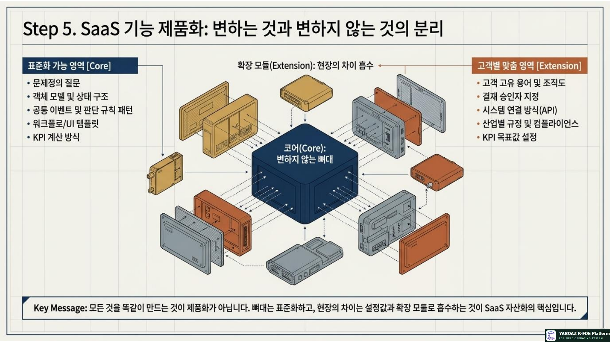
YABOAZ 플랫폼 자산 라이브러리
- 업종별·도메인별 온톨로지 라이브러리
- 자료 누락·이탈 위험·설비 고장·화재 위험 등 AI 판단 시나리오
- 고객 온보딩·승인 요청·자료 보완·위험 알림·사고 대응 워크플로
- 온톨로지·객체 모델·권한·워크플로 엔진·출처 추적·액션·KPI·확장 템플릿
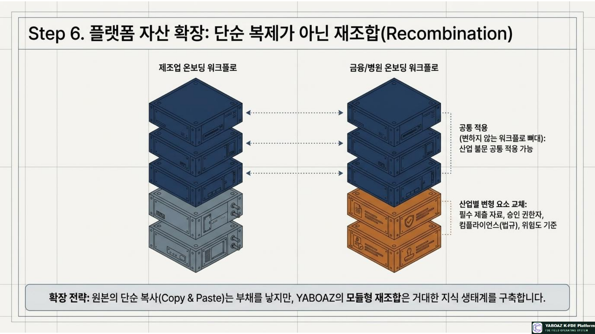
5. 자산화 판정 기준과 등급
| 기준 | 확인 질문 |
|---|---|
| 반복성 | 다른 프로젝트에서도 반복될 가능성이 있는가? |
| 효과성 | 실제 KPI 개선이 확인되었는가? |
| 안정성 | 예외 상황에서도 작동하는가? |
| 이해 가능성 | 다른 FDE가 구조를 이해할 수 있는가? |
| 설정 가능성 | 고객별 차이를 설정으로 처리할 수 있는가? |
| 책임성·확장성 | 권한·승인·출처가 관리되고 다른 산업으로 확장 가능한가? |
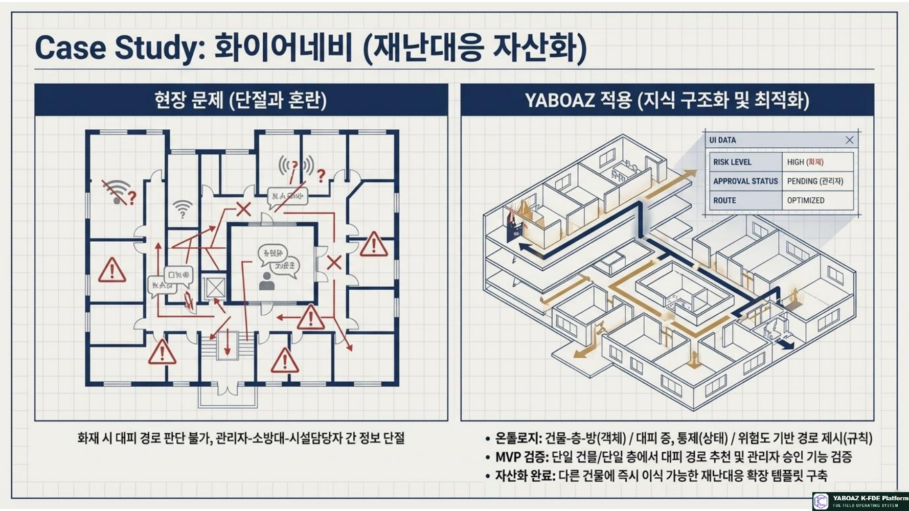
FDE 자산화 플라이휠
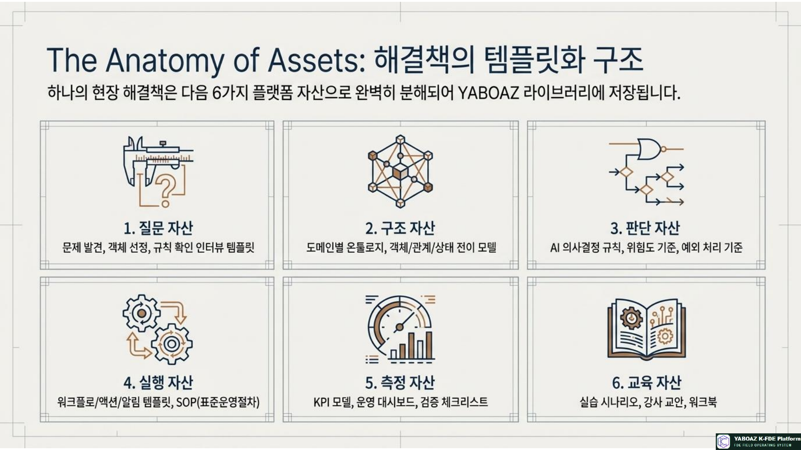
6. 실제 예시: 화이어네비
현장 문제
화재 발생 시 대피자가 어디로 이동해야 하는지 빠르게 판단하기 어렵고, 관리자·소방대·시설담당자의 정보가 단절됩니다.
온톨로지 구조화
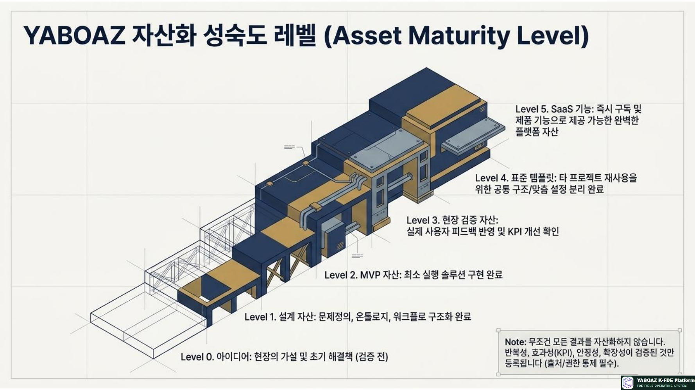
워크플로와 MVP
MVP는 특정 건물과 층을 대상으로 대피경로 추천, 관리자 승인, 대피 안내를 구현하고 대피시간과 도달률을 측정합니다. 검증 후 건물 객체 모델, 위험도 규칙, 경로 알고리즘, 승인 워크플로, KPI, 인터뷰 질문과 확장 템플릿으로 자산화할 수 있습니다.
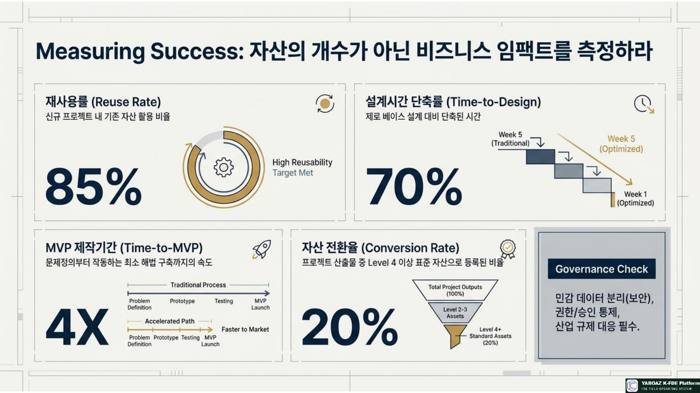
7. 교육생의 자산화 경험과 성과 지표
교육생은 현장 관찰, 문제 구조화, AI 연결, MVP 제작, 성과 측정, 제품화, 재사용 자산화 역량을 함께 습득합니다.
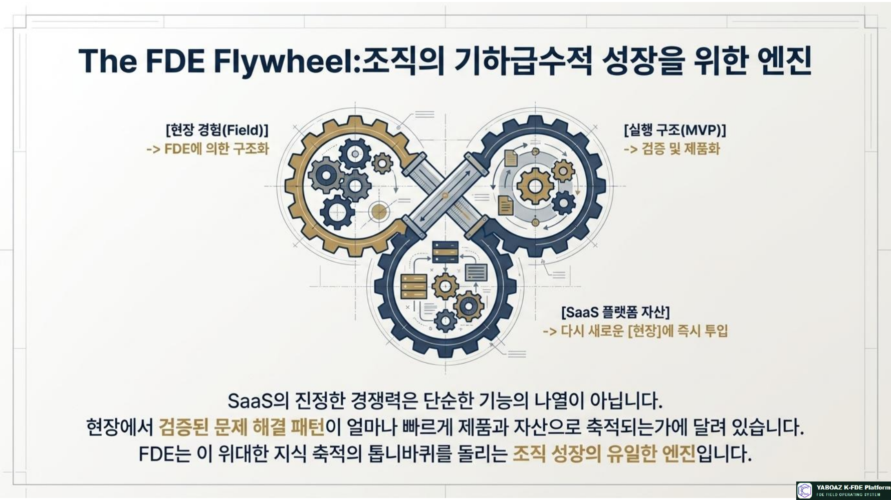
8. 최종 실행 구조와 결론
↓
[구조화] 온톨로지·규칙·워크플로 모델링
↓
[검증] MVP·Bootcamp·KPI로 성과 확인
↓
[제품화] 공통 패턴을 템플릿과 SaaS 기능으로 전환
↓
[확장] 다른 고객·산업·현장에 재조합
↓
[학습] 새로운 예외와 문제를 다시 플랫폼에 반영
현장 경험을 실행 구조로 바꾸고, 실행 구조를 SaaS 기능으로 제품화하며, 제품화된 기능을 플랫폼 자산으로 확장한다.
FDE는 현장에서 문제를 해결하는 사람을 넘어, 조직이 반복적으로 성장할 수 있는 플랫폼 자산을 수확하는 사람입니다.